Cos'è? Il progetto è una suoneria
supplementare usando una campanella a 12v. (es. scolastiche o antincendio).
Per non esplodere mettendo le mani nei 90v in alternata delle linee telefoniche
ho preferito sfruttare una suoneria a cicalino già pronta,
collegandoci però una campanella (molto forte) per aumentare ancora di più
l'effetto.
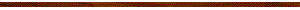
Come
funziona? Appena qualcuno chiama il numero fisso, la suoneria acquistata
(cicalino) suonerà e lampeggerà.
Un fotoresistore LDR (vedi D/R) rileverà i lampeggi, attraverso il circuito
questo TRIGGER verrà amplificato.
Il primo lampeggio farà scattare un relè temporizzato (vedi D/R), che chiuderà
un circuito per un tempo personalizzabile (io ho messo 2 sec.)
Chiudendo questo circuito la campanella riceverà la tensione di 12v suonando per appunto
la durata scelta (2 secondi).
Passato il tempo impostato il relè si riaprirà spegnendo la campanella.
Lo squillo successivo (dopo ca. 1 secondo) riattiverà di nuovo il circuito in
questa sequenza.
DOMANDE/RISPOSTE
Cos'è un fotoresistore LDR?? Un LDR (Light Dependent
Resistor)
è un componente elettronico la cui resistenza
varia in base alla luce che riceve.
Con molta luce la sua resistenza diminuisce, con poca luce o buio la sua
resistenza aumenta. =============== Cos'è un
relè temporizzato?? Un relè temporizzato è
un relè che apre o chiude un contatto dopo o per un intervallo di tempo impostato.
Riceve un segnale di comando e chiude il relè,inizia il conteggio del
tempo impostato. Al termine del tempo, apre il
circuito. N.B. Ne esistono diversi tipi, quello sotto indicato è perfetto
per questo specifico progetto, (ha anche altri programmi). ===============
Come mai il relè temporizzato??
Se avessi collegato direttamente tutto con un relè
normale, a ogni lampeggio il circuito si sarebbe aperto e richiuso,
aumentandone l'usura e i possibili malfunzionamenti. Inoltre la campanella
avrebbe prodotto un (DR-DR-DR-DR).
Utilizzando invece un relè temporizzato il suono prodotto è un (DRIIIN) stabile
per 2 secondi,
lasciando passare 2 squilli dalla parte di chi chiama come 1 continuo della
campanella.
Se chi chiama chiude prima la chiamata la campanella ha il tempo di spegnersi,
lo stesso se si risponde. =============== Se non ho
quelle resistenze specifiche??
Puoi mettere più resistenze insieme,
come ho fatto io.
(es. per 1.5KΩ
-> 1KΩ+330Ω+220Ω ----- per 8.3KΩ -> 5.1KΩ+2KΩ+1KΩ+220Ω)
poi se invece di essere (es) 8.3 è 8.2 non dovrebbe cambiare niente. (non ho
provato)
ALTRIMENTI!!! puoi usare un potenziometro da 10KΩ e regolarlo con quei valori, ma
lo sconsiglio. =============== Devo usare
per forza un PCB??
Si, a meno che tu non abbia una
pazienza infinita che ti permetta di rifare dodicimilavolte il circuito.
Facendo saldature volanti rischi che si rompa tutto a ogni movimento e che non
funzioni correttamente (come è
successo a me) PER QUESTO TI CONSIGLIO DI USARE UN PCB !!!!!
NOTA IMPORTANTE!!!
Se sei fortunato ti
arriverà una versione della suoneria JMX-102 (o qualsiasi altro modello) con un
LED NORMALE!
In questo caso non dovresti aver bisogno del circuito amplificatore con PCB,
resistenze e transistor!!! :)
P.S. Non era il mio caso e quindi non ho potuto provare, ma dovrebbe funzionare
così.
Se invece ti ritrovi come me ad avere una mini lampadina a incandescenza (grain
of wheat) non sostituibile, continua a fare il PCB :(
(non sostituirla con un LED! funziona a 50volt e non vorresti sentire puzza di
bruciato o vedere del fumo, vero???)
Componenti:
Relè
temporizzato XY-LJ02
Fotoresistore LDR
Resistenze
Transistor 2N2222
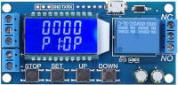
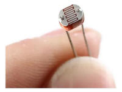
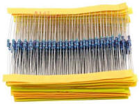
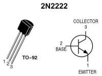
tempo programmabile
***
8.3
KΩ, 1.5KΩ
controllare lo schema!
Suoneria est. JMX-102
Scheda perforata/PCB
Campanella 12V
Alimentatore 12V 3A
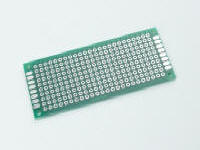
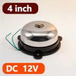
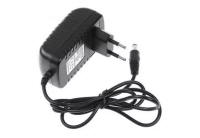
o
simile
una qualsiasi, puoi tagliarle
l'importante è che sia a 12v
3ampere minimo!
tutti i materiali sono
disponibili su amazon o su aliexpress.
Collegamento: Partiamo dal modificare la suoneria.
1. Salda due fili alle due estremita' del fotoresistore LDR.
2. Tappa la finestrella e le possibili "intrusioni" di luce nella suoneria,
quindi il fissaggio a muro (se non ti serve) e dove si mette il cavo RJ11 da
dentro.
3. Fissa all'interno della suoneria il LDR puntato al LED/Lampadina (usa colla o
fissalo in qualsiasi modo, basta che stia fermo!).
4. Fai uscire i cavetti e richiudi tutto (magari fai un buchetto nella scocca).
Procediamo con il PCB:
5. Posiziona tutti i componenti come preferisci.
6. Segui i collegamenti dello schema!!!.. qui non posso dirti altro ._.
Passiamo all'assemblaggio
finale.
7. Collega tutti i cavi, quindi alla scheda i 12v, trigger, NO, CO.
8. Assicurati di usare cavi almeno di 1,5mm2 e di unirli fra di loro
con dei morsetti!
ATTENZIONE! NON STRINGERE DIRETTAMENTE TUTTI I CAVI INSIEME NELLA SCHEDA
ESEMPIO: il negativo (-12v) della campanella e tutti i negativi non
stringerli nella morsettiera della scheda,
invece prendi uno di questi qui sotto e fai: 1 cavo negativo dal morsetto
al negativo dell'alimentatore,
poi 1 cavo per la scheda, 1 cavo per la campanella, 1 cavo per negativo
PCB, e così via...
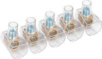
morsetti da utilizzare
Schema
circuito amplificatore su PCB:
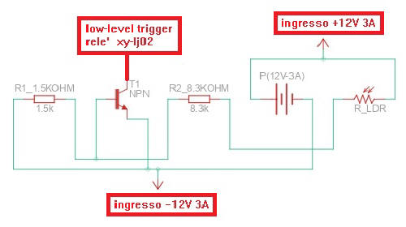
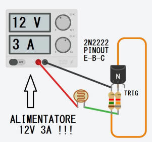
Contenitore / Stampa 3D: Io ho stampato una scatola con la
stampante 3D per adattare tutte le misure al mio caso,
potete fare così anche voi oppure mettere tutto in una scatola di derivazione.
Risultato
finale (audio/mpeg): ABBASSA IL VOLUME!
SCH-JMX102.JPEG
LDR.JPG
FINALE.JPEG
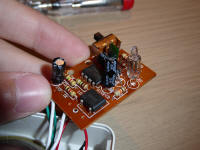
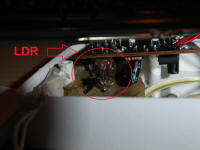
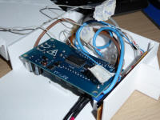
PCB1.JPEG
PCB2.JPEG
ALIMENTAZ.JPEG
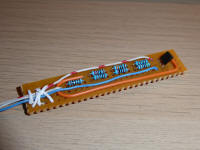
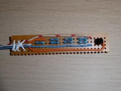
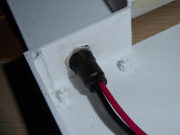
Downloads:
MANUALE PDF RELE' XY-LJ02
INGLESE (originale)
547Kb
MANUALE PDF RELE' XY-LJ02
ITALIANO (tradotto)
378Kb
Grazie!
Il materiale può essere usato liberamente
per scopi personali o didattici,
ma non può essere redistribuito o ripubblicato altrove.